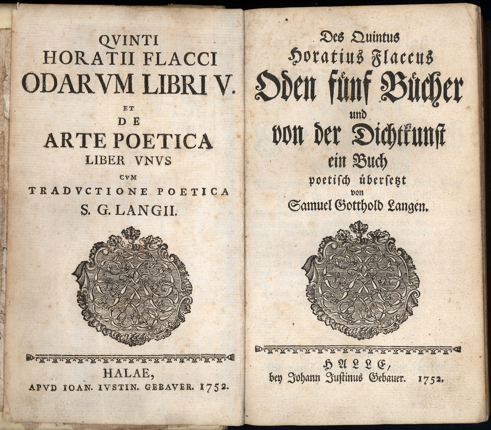
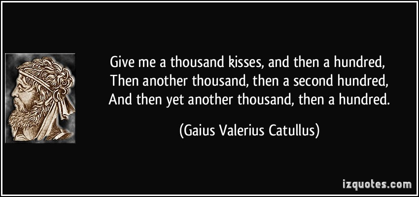
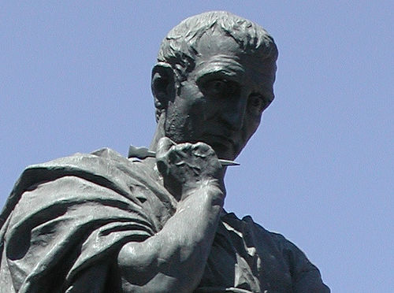

Classical Rome Literature
Roman literature, was written in Latin and will always be a permanent legacy of the culture of ancient Rome. There are few works from then that are speaking about the early military history of Rome.
The Romans should be thankful to the Greeks because their literature is based on Greek's literature. Most Roman writers copied Greek classical themes or even translated many Greek works into Latin. This was not a problem for the citizens of Rome, due to the fact that they were very well educated so many of them knew Greek and Latin.
The poetry of the Golden Age
In the Golden Age of Roman poetry, many notable writers such as Virgil, Horace, Catullus, Propertius, Tibullus and Ovid. Three writers made an important develop in Roman poetry, Virgil, Horace and Ovid developed a classical style of writing in comparison to the Greek writers

Quintus Horatius Flaccus or Horace (65 BCE – 8 BCE), was the son of a freedman. Because of his love for philosophy, Horace's songs have shown joy for life and love for nature. His famous works are Satires, Epodes and Odes. Satires was a criticism of the eruption in Rome, Epodes was a poem that was inspired by Greek author Archilochus and Odessa was the celebration of life in Rome in the time of August

The age of Augustus create many young poets who changed their way of writing. The main poet was Gaius Valerius Catullus (84 BCE – 54 BCE), who was and the greatest Roman lyric poet. He found his inspiration in Greek writers Sappho and Callimachus. Catullus poetry was mixed with passion and stylishness

The most famous and not famous poet of that time is Publius Ovidius Naro or Ovidius (42 BC - 18 years). With his poetry, it was possible to confront the Greeks. He published two poems, the first one was called Amores, it was about two young people who and their misadventures.The other poem was called Heroes were a series of 15 letters written by Greek and Roman mythological female figures such as Penelope and Dido to their loved ones who abused or left them behind
The Age of Silver Roman poetry
The Silver Age had two best Roman poets, are Marcus Annaeus Lucanus, better known as Lucan (39 – 65 CE), and Publius Papinius Statius (45 – 96 CE). Lucan was born in Spain, studied philosophy in Athens. His best work was called Thebaid